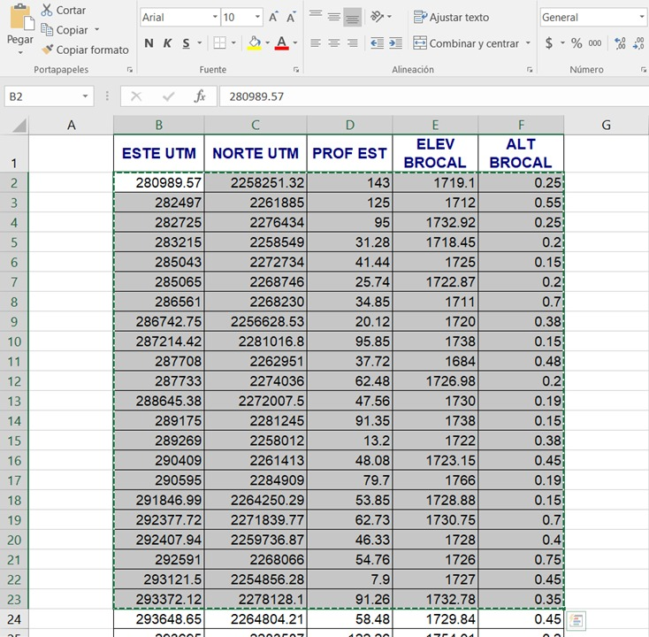

Instrucciones.
Se coherente con tus unidades y no refresques la página hasta que termines. Este es un proyecto en DESARROLLO, cualquier fallo o sugerencia favor de contactar con el autor.
Entrada de datos.
Para la entrada de datos se cuenta con dos opciones, pegar datos provenientes de EXCEL o introducir uno por uno, como la intención es que sea lo mas comoda posible, se recomienda que se use el primer método. Independientemente del método, las coordenadas deberan ser en UTM presición metro. Por cuestiones de rendimiento se restrigio el número de pozos a 30, sin embargo esto se puede cambiar esto en el menu de opciones, pero hay que tener en cuenta que esto puede consumir muchos recursos de su dispositivo, tardar varios minutos y que el navegador arroje algun mensaje de advertencia, así que la recomendación sigue siendo 30 pozos.
Si se desea pegar los datos de Excel, las columnas deberan tener el siguiente orden: Coordenada Este, coordenada Norte, profundidad del nivel estático, la elevación del brocal y la altura del brocal. Las celdas no deberan tener formato de número, es decir, usar el tipo general y por último en la selección se omitiran los títulos. Dar click en "Agregar pozos", una vez hecho esto no se podran agregar mas pozos, a menos que se metan manualmente.
Si se desea introducir los datos manualmente, basta con llenar los espacios que se piden y clickear en "Agregar pozo".
En caso de solo querer las curvas de profundidad del nivel estático se puede omitir la información de la elevación del brocal
y la altura del brocal.
Generar curvas.
Antes de generar las curvas se debe estar seguro de que la información está completa, ya que después de generarlas no se podran agregar más pozos, como mínimo habrá que tener información de 3 pozos para poder generar las curvas.
Primero hay que dirigirse al panel de visualización del tipo de curvas que se desee visualizar y seleccionar en el botón "Crear curvas".
Ajustes.
Para desplegar el menu se tiene que seleccionar la opción en el panel marcada por "..." ahí se podra modificar: la equidistancia, la cantidad máxima de pozos y el color de las curvas, también se podra activar la opción para visualizar los pozos y sus numeros, y el valor que tienen todas las curvas. Todos estos ajustes se pueden aplicar antes o después de generar las curvas.
Datos de un punto.
Está función sirve para obtener la información de un punto cualquiera en el terreno, siempre y cuando este dentro de la triangulación, para esto el usuario tiene la opción de introducir las coordenadas o bien, usar la opción de seleccionar en el mapa para obtener las coordenadas; una vez introducidas las coordenadas, se dara click en el botón Obtener datos, cabe aclarar que está función solo estará disponible despues de que se hayan generado cualquiera de los dos tipos de curvas.
Pagina hermana de análisis estructural